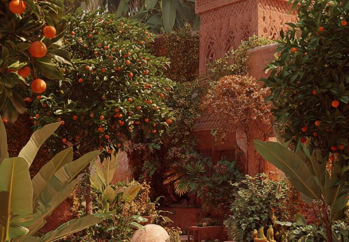

Garden Coordinator
Plans the planting calendar and keeps both gardens healthy through every season.
Founded in 2020 in Johannesburg, GreenReach is a non-profit initiative dedicated to urban agriculture, food security and community wellness. What began as a small plot is now a thriving community space.
Explore our story, mission, vision and team using the tabs below, then find a way to volunteer or see what is happening this month.

GreenReach Community Garden began in 2020 when a handful of neighbours turned an unused plot in Johannesburg's city centre into a shared vegetable garden. A few raised beds grew into a space that now hosts workshops, volunteer programmes and educational activities every week.
In 2024 we opened the Soweto Satellite Garden in Orlando West, bringing fresh produce and skills training closer to the families who need them. Today our volunteers grow food, teach gardening skills and organise community events across both sites.
See the work in action in our garden gallery or read recent updates on the blog.
To empower underprivileged communities through sustainable urban gardening, education and food security.
A city where every neighbourhood has access to fresh produce, gardens flourish in urban spaces, and community members grow not just plants, but connections and health.
We measure our progress by the number of families fed, skills shared and new gardens started by people we have trained. Support our work to help us reach more neighbourhoods.
GreenReach is run by passionate volunteers, local community leaders and gardening experts who share their knowledge freely.
Plans the planting calendar and keeps both gardens healthy through every season.
Designs and teaches our workshops on growing food, composting and nutrition.
Welcomes new volunteers, runs the monthly induction and matches people to teams.
Builds partnerships with schools, clinics and neighbours so the harvest reaches those in need.